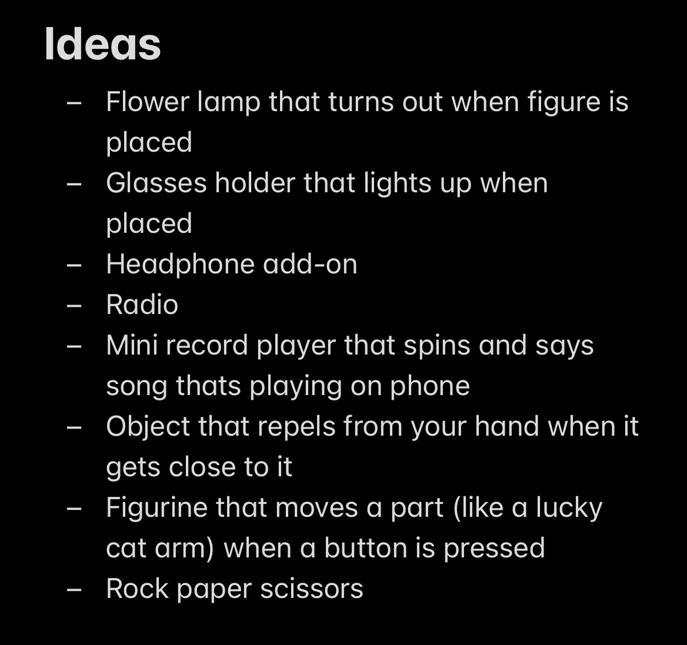
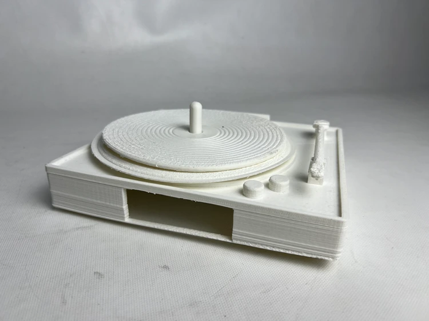

Spotify Record Player
Duration
May - June 2024
(1 Mo.)
Tools
Arduino, Python, C++, TinkerCAD, 3D Printer
Overview
For my Maker Workshop class, we were given the task of creating an object utilizing 3D printed components designed using CAD software and an Arduino UNO with functioning code in C++. Utilizing the Spotify API, I altered a Python script that extracts the song name and artist of the current track playing on my personal Spotify account, which were then displayed on an LCD screen connected and powered by my Arduino. The LCD Screen and Arduino components were then encased in a 7” x 7.5” inch 3D printed shell modeled in TinkerCAD to resemble the shape of a record turntable.
Brainstorming
I had come up with a number of initial ideas, a list of which is shown below:
Out of all of these, the record player idea appealed to me the most. I thought that it would be a good way to challenge myself with this project and allow me to utilize some of my Python knowledge.
Programming & Debugging
I first researched methods of extracting specific data from a Spotify account, in this case my own, and allow it to be processed through the Arduino. My initial search led me to a tutorial detailing how an individual went about this exact task using Python and C++ within the official Arduino IDE. My recreation and tests of both the wiring and the provided source code on their GitHub, however, led me to realize that much of the information turned out to be outdated. After much time spent attempting to debug and update the program, I soon realized that finding an alternative method would end up being less time consuming in the long run.

Fortunately, I stumbled across another GitHub page detailing how to go about the task through the use of Spotify's Web API in addition to the previously mentioned programs. After creating my own Spotify for Developers account and creating an application to reference within my Python program, I once again debugged and updated other necessary aspects of the program in order for it to function properly.
Assembly
Utilizing models I had found for parts of a miniature record player, I modified them using TinkerCAD to both be larger than the original size and to have a hollow base in order to accommodate the Arduino, all of which were eventually printed using a MakerLab 3D Printer. I had initially added a hole in order to accommodate a motor to spin the record plate, however this did not pan out in the printing process and the idea was scrapped. As for the Arduino wiring, I condensed wiring I had taken from the original tutorial I had found onto a smaller breadboard in order to fit within the hollow base.
Results
Although the programming phase was incredibly arduous, showcasing the final product to the class and professor was worth the effort put into the project. Online resources, my knowledge of Python from a previous Computer Science class, and my own creativity were integral in my success. This class not only fueled a child-like sense of product design creation for me, but also allowed me to develop a better understanding of the design process and the utilization of different tools like laser cutters, basic CAD software, and Arduino!